Plage formantique : 162–1 518 Hz (voyelles /u/ → /e/).
Caractéristique : les cordes frottées possèdent des résonances de caisse larges (plateaux spectraux) que le peak-picking ne capture pas toujours correctement. C'est pour les cordes que le Fp centroïde apporte le gain de stabilité le plus significatif — notamment pour le violon (Fp=893 Hz, σ=92, vs F2=1518, σ=651).
Cluster /o/ : le violoncelle (F2=506 Hz) et l'alto (F1=377 Hz) sont proches du cluster 450–502 Hz, facilitant leur fusion avec les cuivres (cor, trombone) et les bois (basson).
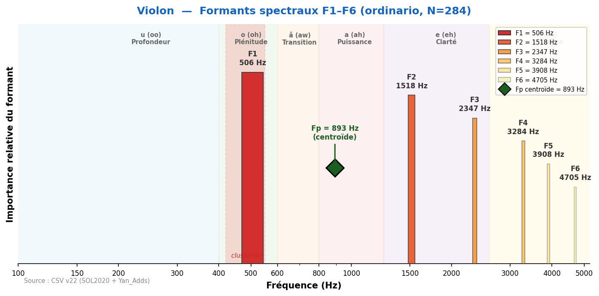
Son brillant et expressif, grande tessiture. F1=506 Hz dans le cluster /o/. Le Hauptformant de Meyer (800–1200 Hz) se manifeste comme un plateau spectral large : Fp=893 Hz (σ=92), remarquablement stable sur 4 octaves. F2=1518 Hz (zone nasale) est un artefact statistique du peak-picking.
Fp centroïde = 893 Hz
| Technique | N | F1 | F2 | F3 | F4 | F5 | F6 |
|---|---|---|---|---|---|---|---|
| artificial_harmonic | 49 | 377 | 894 | 1 626 | 2 379 | 3 488 | 4 242 |
| artificial_harmonic_tremolo | 46 | 366 | 926 | 1 981 | 2 476 | 3 542 | 4 274 |
| behind_the_bridge | 7 | 538 | 1 152 | 2 240 | 3 068 | 3 381 | 5 050 |
| behind_the_fingerboard | 1 | 484 | 872 | 1 120 | 1 766 | 3 618 | 5 243 |
| chromatic_scale | 2 | 528 | 904 | 1 529 | 1 916 | 2 261 | 3 747 |
| col_legno_battuto | 63 | 398 | 883 | 1 518 | 2 132 | 2 928 | 4 027 |
| col_legno_tratto | 61 | 377 | 818 | 1 357 | 2 110 | 2 627 | 4 005 |
| crescendo | 44 | 592 | 1 432 | 2 369 | 3 133 | 3 930 | 4 716 |
| crescendo_to_decrescendo | 60 | 420 | 1 023 | 2 218 | 2 810 | 3 833 | 4 576 |
| crushed_to_ordinario | 54 | 366 | 829 | 1 873 | 2 347 | 3 456 | 4 220 |
| decrescendo | 40 | 517 | 1 497 | 2 358 | 3 413 | 4 059 | 4 931 |
| hit_on_body | 4 | 398 | 851 | 1 335 | 1 744 | 1 464 | 1 776 |
| natural_harmonics_glissandi | 24 | 1 550 | 2 003 | 2 541 | 3 036 | 3 402 | 4 242 |
| non_vibrato | 249 | 409 | 990 | 2 229 | 3 079 | 3 898 | 4 436 |
| note_lasting | 57 | 517 | 1 324 | 2 229 | 2 961 | 3 833 | 4 425 |
| on_the_tailpiece | 1 | 366 | 711 | 1 303 | 1 776 | 3 833 | 5 631 |
| on_the_tuning_pegs | 4 | 431 | 861 | 1 335 | 1 658 | 1 970 | 3 585 |
| ordinario | 284 | 506 | 1 518 | 2 347 | 3 284 | 3 908 | 4 705 |
| ordinario_to_crushed | 58 | 355 | 808 | 1 507 | 2 369 | 3 499 | 4 210 |
| ordinario_to_sul_ponticello | 43 | 388 | 894 | 2 078 | 2 799 | 3 714 | 4 414 |
| ordinario_to_sul_tasto | 55 | 441 | 1 066 | 2 229 | 2 756 | 3 768 | 4 468 |
| ordinario_to_tremolo | 46 | 420 | 1 174 | 2 164 | 2 950 | 3 725 | 4 684 |
| pizzicato_bartok | 53 | 431 | 851 | 1 400 | 2 100 | 3 198 | 4 253 |
| pizzicato_l_vib | 243 | 409 | 851 | 1 270 | 1 787 | 2 498 | 3 542 |
| pizzicato_secco | 189 | 388 | 764 | 1 195 | 1 776 | 2 390 | 3 456 |
| sforzato | 100 | 452 | 1 174 | 2 218 | 2 907 | 4 038 | 4 737 |
| staccato | 60 | 474 | 1 098 | 2 207 | 3 122 | 3 919 | 4 565 |
| sul_ponticello | 58 | 388 | 937 | 2 196 | 2 939 | 3 833 | 4 360 |
| sul_ponticello_to_ordinario | 46 | 409 | 1 001 | 2 347 | 2 961 | 3 801 | 4 447 |
| sul_ponticello_to_sul_tasto | 37 | 377 | 926 | 2 100 | 2 810 | 3 736 | 4 479 |
| sul_ponticello_tremolo | 58 | 603 | 1 572 | 2 358 | 2 950 | 3 801 | 4 371 |
| sul_tasto | 50 | 517 | 1 012 | 2 164 | 2 616 | 3 510 | 4 242 |
| sul_tasto_to_ordinario | 52 | 431 | 1 120 | 2 110 | 2 832 | 3 854 | 4 468 |
| sul_tasto_to_sul_ponticello | 52 | 398 | 948 | 2 196 | 2 778 | 3 801 | 4 436 |
| tremolo | 285 | 495 | 1 163 | 2 100 | 2 928 | 3 747 | 4 404 |
| tremolo_to_ordinario | 41 | 495 | 1 389 | 2 293 | 3 122 | 3 876 | 4 651 |
| trill_major_second_up | 61 | 528 | 1 120 | 2 186 | 2 487 | 3 682 | 4 296 |
| trill_minor_second_up | 63 | 484 | 1 270 | 2 143 | 2 649 | 3 585 | 4 274 |
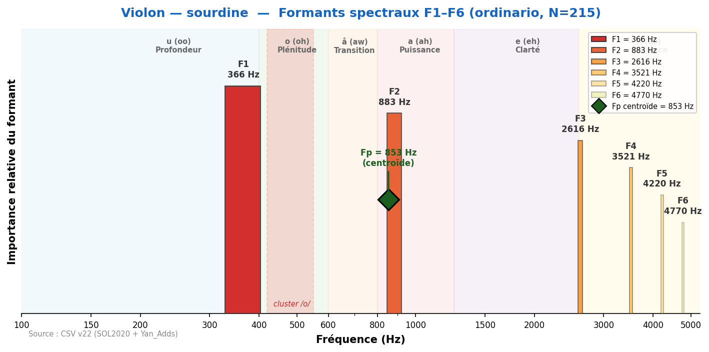
La sourdine abaisse F1 de 506 à 366 Hz et atténue les aigus. Le timbre devient plus doux et voilé, avec moins de projection. Fp descend de 893 à 853 Hz.
Fp centroïde = 853 Hz
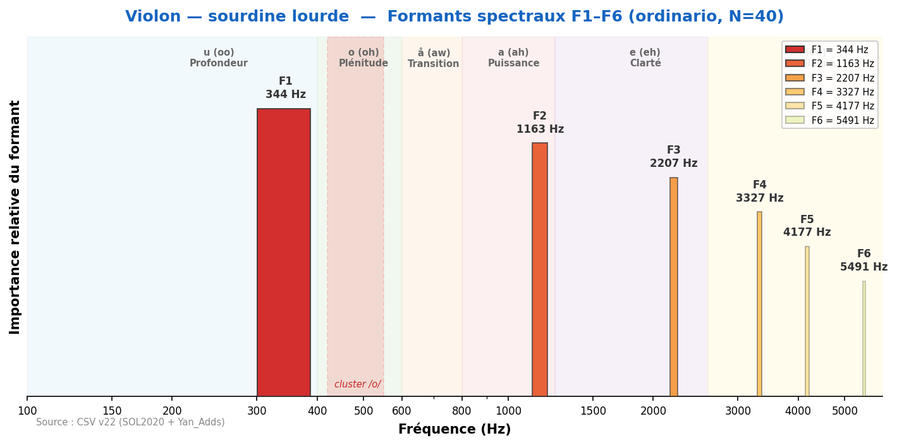
La sourdine lourde (piombo) produit un effet plus radical : F1=344 Hz, son très étouffé et distant. Le spectre est fortement comprimé, timbre quasi irréel.
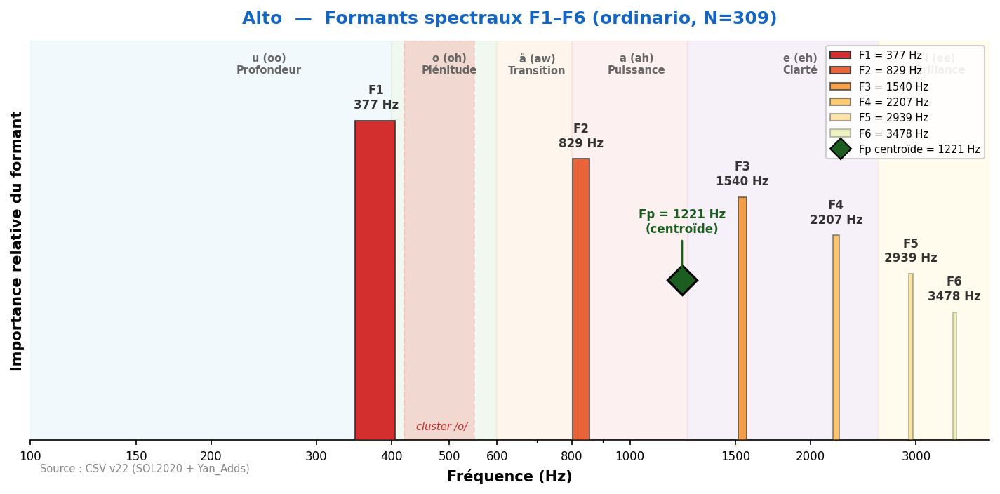
Son chaud et mélancolique, intermédiaire entre violon et violoncelle. F1=377 Hz (zone /o/). Fp=1221 Hz capture la résonance de caisse caractéristique de l'alto. Tessiture expressive dans le médium.
Fp centroïde = 1221 Hz
| Technique | N | F1 | F2 | F3 | F4 | F5 | F6 |
|---|---|---|---|---|---|---|---|
| artificial_harmonic | 53 | 377 | 743 | 1 540 | 2 175 | 2 907 | 3 510 |
| artificial_harmonic_tremolo | 54 | 366 | 743 | 1 550 | 2 218 | 2 939 | 3 521 |
| behind_the_bridge | 4 | 355 | 1 001 | 1 960 | 2 993 | 4 328 | 4 942 |
| behind_the_fingerboard | 4 | 711 | 1 314 | 2 401 | 3 327 | 3 790 | 4 888 |
| chromatic_scale | 2 | 388 | 732 | 1 044 | 1 529 | 2 121 | 3 155 |
| col_legno_battuto | 64 | 377 | 754 | 1 303 | 1 755 | 2 218 | 3 090 |
| col_legno_tratto | 64 | 355 | 732 | 1 443 | 2 078 | 2 433 | 3 144 |
| crescendo | 48 | 377 | 808 | 1 604 | 2 153 | 2 746 | 3 488 |
| crescendo_to_decrescendo | 64 | 377 | 775 | 1 572 | 2 207 | 2 821 | 3 413 |
| crushed_to_ordinario | 64 | 344 | 754 | 1 098 | 1 744 | 2 304 | 3 090 |
| decrescendo | 48 | 388 | 872 | 1 669 | 2 369 | 3 133 | 3 865 |
| hit_on_body | 5 | 237 | 603 | 1 055 | 1 367 | 1 723 | 1 949 |
| natural_harmonics_glissandi | 24 | 409 | 1 464 | 1 927 | 2 196 | 2 821 | 3 144 |
| non_vibrato | 297 | 366 | 754 | 1 400 | 2 110 | 2 788 | 3 445 |
| note_lasting | 52 | 388 | 786 | 1 540 | 2 207 | 2 638 | 3 359 |
| on_the_bridge | 1 | 366 | 711 | 1 034 | 1 314 | 1 927 | 3 133 |
| on_the_frog | 1 | 215 | 689 | 1 023 | 1 755 | 2 100 | 4 317 |
| on_the_tuning_pegs | 4 | 334 | 1 077 | 1 572 | 1 992 | 3 392 | 5 060 |
| ordinario | 309 | 377 | 829 | 1 540 | 2 207 | 2 939 | 3 478 |
| ordinario_to_crushed | 48 | 334 | 732 | 1 077 | 1 906 | 2 250 | 3 112 |
| ordinario_to_sul_ponticello | 52 | 377 | 743 | 1 604 | 2 196 | 2 778 | 3 338 |
| ordinario_to_sul_tasto | 64 | 355 | 764 | 1 507 | 2 110 | 2 853 | 3 359 |
| ordinario_to_tremolo | 48 | 377 | 829 | 1 443 | 2 067 | 2 627 | 3 176 |
| pizzicato_bartok | 57 | 302 | 581 | 1 077 | 1 529 | 2 358 | 3 133 |
| pizzicato_l_vib | 192 | 302 | 678 | 1 087 | 1 540 | 2 153 | 3 047 |
| pizzicato_secco | 156 | 291 | 668 | 1 087 | 1 529 | 2 121 | 2 799 |
| sforzato | 96 | 377 | 980 | 1 594 | 2 336 | 3 144 | 3 811 |
| staccato | 64 | 366 | 861 | 1 626 | 2 336 | 2 821 | 3 413 |
| sul_ponticello | 95 | 366 | 754 | 1 497 | 2 196 | 2 928 | 3 467 |
| sul_ponticello_to_ordinario | 64 | 377 | 775 | 1 604 | 2 196 | 2 950 | 3 348 |
| sul_ponticello_to_sul_tasto | 49 | 377 | 808 | 1 647 | 2 229 | 2 907 | 3 338 |
| sul_ponticello_tremolo | 95 | 366 | 851 | 1 540 | 2 207 | 2 788 | 3 348 |
| sul_tasto | 95 | 366 | 754 | 1 324 | 2 078 | 2 638 | 3 155 |
| sul_tasto_to_ordinario | 52 | 377 | 743 | 1 464 | 2 186 | 2 821 | 3 305 |
| sul_tasto_to_sul_ponticello | 52 | 377 | 764 | 1 529 | 2 250 | 2 950 | 3 445 |
| sul_tasto_tremolo | 95 | 366 | 754 | 1 227 | 1 970 | 2 476 | 3 144 |
| tremolo | 309 | 366 | 775 | 1 357 | 2 013 | 2 649 | 3 273 |
| tremolo_to_ordinario | 48 | 366 | 797 | 1 454 | 2 207 | 3 068 | 3 478 |
| trill_major_second_up | 64 | 420 | 808 | 1 454 | 2 121 | 2 799 | 3 208 |
| trill_minor_second_up | 64 | 409 | 883 | 1 529 | 2 143 | 2 788 | 3 165 |
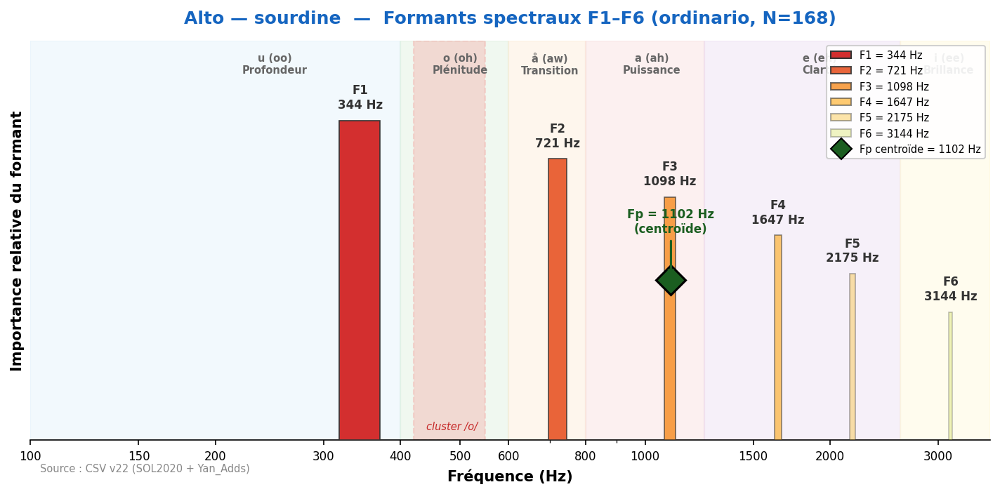
Sourdine : F1 descend de 377 à 344 Hz. Son plus intime et voilé, perte de projection. Fp=1102 Hz.
Fp centroïde = 1102 Hz
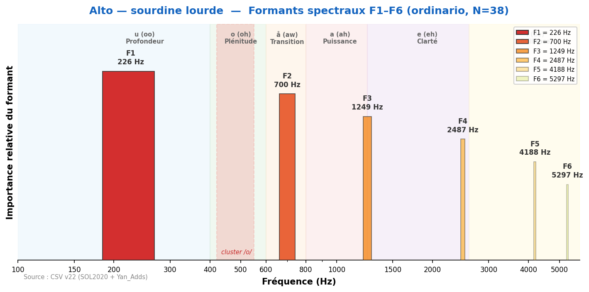
Sourdine lourde : F1 chute à 226 Hz. Effet très prononcé, son distant et éthéré, quasi fantomatique.
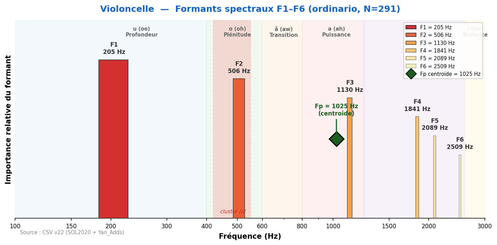
Son profond et lyrique, grande richesse harmonique. F1=205 Hz (zone /u/). Fp=1025 Hz (σ=70). Le violoncelle converge remarquablement avec le basson (Δ=3 Hz sur F2) et le cor (Δ=42 Hz).
Fp centroïde = 1025 Hz
| Technique | N | F1 | F2 | F3 | F4 | F5 | F6 |
|---|---|---|---|---|---|---|---|
| artificial_harmonic | 45 | 269 | 614 | 1 087 | 1 723 | 2 067 | 2 627 |
| artificial_harmonic_tremolo | 45 | 183 | 592 | 1 174 | 1 776 | 2 046 | 2 638 |
| behind_the_bridge | 4 | 269 | 581 | 937 | 1 260 | 1 798 | 2 412 |
| chromatic_scale | 2 | 205 | 754 | 1 087 | 1 486 | 2 035 | 2 067 |
| col_legno_battuto | 45 | 172 | 484 | 915 | 1 314 | 1 830 | 2 358 |
| col_legno_tratto | 45 | 205 | 829 | 1 141 | 1 540 | 1 981 | 2 401 |
| crescendo | 32 | 226 | 614 | 1 141 | 1 863 | 2 207 | 2 562 |
| crescendo_to_decrescendo | 39 | 205 | 528 | 1 087 | 1 798 | 2 240 | 2 670 |
| crushed_to_ordinario | 39 | 205 | 474 | 1 034 | 1 475 | 1 992 | 2 606 |
| decrescendo | 31 | 258 | 657 | 1 152 | 1 938 | 2 315 | 2 649 |
| hit_on_body | 5 | 215 | 678 | 969 | — | — | — |
| natural_harmonics_glissandi | 24 | 258 | 549 | 1 077 | 1 507 | 2 003 | 2 433 |
| non_vibrato | 279 | 194 | 495 | 1 087 | 1 529 | 2 078 | 2 476 |
| note_lasting | 35 | 205 | 538 | 1 098 | 1 540 | 2 056 | 2 552 |
| on_the_bridge | 1 | 194 | 474 | 1 130 | 1 529 | 1 841 | 2 089 |
| on_the_frog | 1 | 388 | 700 | 1 227 | 1 594 | 3 252 | 4 877 |
| on_the_tailpiece | 1 | 269 | 603 | 872 | 1 335 | 1 755 | 4 059 |
| on_the_tuning_pegs | 4 | 302 | 1 141 | 1 464 | 1 766 | 3 348 | 5 039 |
| ordinario | 291 | 205 | 506 | 1 130 | 1 841 | 2 089 | 2 509 |
| ordinario_to_crushed | 28 | 205 | 506 | 1 141 | 1 518 | 2 046 | 2 519 |
| ordinario_to_sul_ponticello | 35 | 205 | 517 | 1 077 | 1 647 | 2 110 | 2 466 |
| ordinario_to_sul_tasto | 37 | 215 | 678 | 1 400 | 1 873 | 2 229 | 2 606 |
| ordinario_to_tremolo | 32 | 215 | 484 | 1 141 | 1 755 | 2 153 | 2 562 |
| pizzicato_bartok | 45 | 237 | 538 | 1 012 | 1 410 | 1 820 | 2 638 |
| pizzicato_l_vib | 135 | 183 | 474 | 969 | 1 260 | 1 852 | 2 509 |
| pizzicato_secco | 129 | 183 | 484 | 969 | 1 270 | 1 820 | 2 143 |
| sforzato | 59 | 226 | 571 | 1 130 | 1 852 | 2 326 | 2 681 |
| staccato | 39 | 205 | 506 | 1 044 | 1 507 | 1 981 | 2 498 |
| sul_ponticello | 73 | 215 | 549 | 1 109 | 1 820 | 2 089 | 2 487 |
| sul_ponticello_to_ordinario | 35 | 205 | 538 | 1 141 | 1 766 | 2 229 | 2 692 |
| sul_ponticello_to_sul_tasto | 37 | 205 | 495 | 1 152 | 1 583 | 2 078 | 2 476 |
| sul_ponticello_tremolo | 73 | 183 | 517 | 1 163 | 1 809 | 2 078 | 2 444 |
| sul_tasto | 73 | 194 | 538 | 1 098 | 1 507 | 1 938 | 2 476 |
| sul_tasto_to_ordinario | 38 | 205 | 538 | 1 152 | 1 863 | 2 315 | 2 627 |
| sul_tasto_to_sul_ponticello | 38 | 205 | 517 | 1 098 | 1 863 | 2 304 | 2 627 |
| sul_tasto_tremolo | 73 | 205 | 506 | 937 | 1 184 | 1 852 | 2 089 |
| tremolo | 219 | 215 | 484 | 1 066 | 1 486 | 1 884 | 2 164 |
| tremolo_to_ordinario | 31 | 258 | 560 | 1 087 | 1 669 | 2 067 | 2 487 |
| trill_major_second_up | 45 | 205 | 506 | 1 044 | 1 497 | 1 960 | 2 347 |
| trill_minor_second_up | 45 | 215 | 678 | 1 109 | 1 518 | 1 960 | 2 326 |
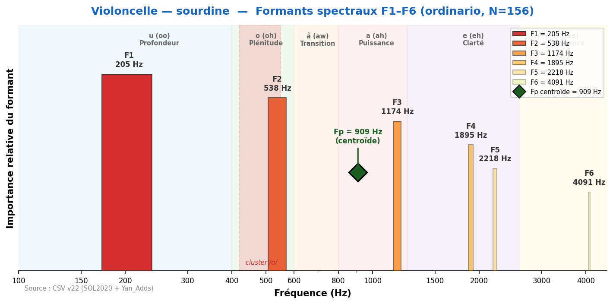
Sourdine : F1 reste à 205 Hz mais F2 monte légèrement (538 vs 506). Son plus mat et contenu. Fp=909 Hz.
Fp centroïde = 909 Hz
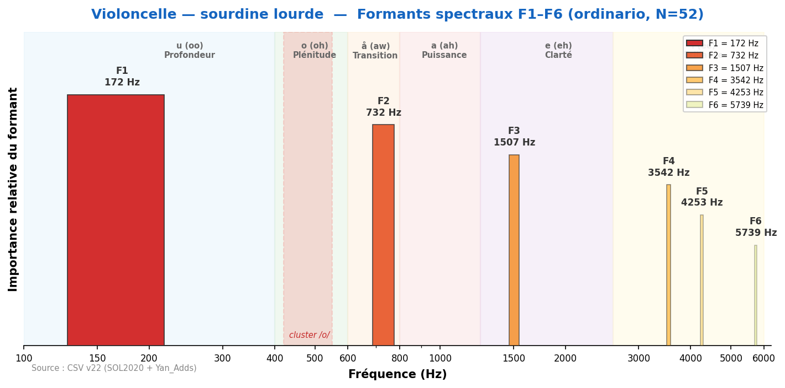
Sourdine lourde : F1 descend à 172 Hz. Forte atténuation des harmoniques aigus, son très assourdi et lointain.
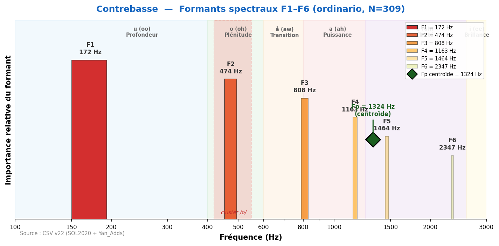
Son grave et puissant, fondation des cordes. F1=172 Hz (zone /u/). Fp=1324 Hz. Faible variabilité de F2 (σ=89 Hz) — les formants de la contrebasse sont très stables.
Fp centroïde = 1324 Hz
| Technique | N | F1 | F2 | F3 | F4 | F5 | F6 |
|---|---|---|---|---|---|---|---|
| artificial_harmonic | 49 | 183 | 538 | 948 | 1 324 | 1 755 | 2 681 |
| artificial_harmonic_tremolo | 46 | 162 | 517 | 915 | 1 303 | 1 723 | 2 541 |
| behind_the_bridge | 4 | 764 | 1 184 | 2 347 | 3 305 | 4 059 | 5 792 |
| chromatic_scale | 2 | 172 | 484 | 818 | 1 152 | 1 518 | — |
| col_legno_battuto | 55 | 140 | 474 | 1 001 | 1 389 | 1 841 | 2 229 |
| col_legno_tratto | 55 | 162 | 484 | 829 | 1 141 | 1 432 | 1 960 |
| crescendo | 36 | 183 | 506 | 980 | 1 270 | 1 540 | 2 412 |
| crescendo_to_decrescendo | 52 | 172 | 495 | 1 012 | 1 324 | 1 615 | 2 509 |
| crushed_to_ordinario | 48 | 183 | 474 | 861 | 1 206 | 1 518 | 1 895 |
| decrescendo | 36 | 183 | 495 | 872 | 1 238 | 1 540 | 2 110 |
| hit_on_body | 5 | 215 | 958 | 1 324 | 1 561 | — | — |
| natural_harmonics_glissandi | 24 | 194 | 495 | 948 | 1 378 | 1 712 | 2 649 |
| non_vibrato | 297 | 172 | 474 | 829 | 1 163 | 1 475 | 2 240 |
| note_lasting | 40 | 172 | 495 | 990 | 1 249 | 1 497 | 1 895 |
| on_the_bridge | 1 | 172 | 474 | 775 | 1 163 | 1 507 | — |
| on_the_tailpiece | 1 | 129 | 560 | 894 | 1 529 | 2 412 | — |
| on_the_tuning_pegs | 4 | 258 | 592 | 1 174 | 1 486 | 1 776 | 2 401 |
| ordinario | 309 | 172 | 474 | 808 | 1 163 | 1 464 | 2 347 |
| ordinario_to_crushed | 36 | 183 | 484 | 883 | 1 195 | 1 454 | 1 863 |
| ordinario_to_sul_ponticello | 43 | 172 | 484 | 926 | 1 238 | 1 507 | 2 089 |
| ordinario_to_sul_tasto | 46 | 172 | 484 | 840 | 1 184 | 1 486 | 1 906 |
| ordinario_to_tremolo | 36 | 183 | 484 | 958 | 1 270 | 1 583 | 2 056 |
| pizzicato_bartok | 54 | 205 | 624 | 1 001 | 1 464 | 1 906 | 2 326 |
| pizzicato_l_vib | 165 | 151 | 463 | 872 | 1 184 | 1 486 | 1 873 |
| pizzicato_secco | 165 | 151 | 463 | 851 | 1 217 | 1 518 | 2 261 |
| sforzato | 72 | 183 | 474 | 872 | 1 206 | 1 507 | 1 852 |
| staccato | 52 | 172 | 463 | 872 | 1 217 | 1 540 | 1 841 |
| sul_ponticello | 76 | 183 | 474 | 840 | 1 163 | 1 475 | 2 164 |
| sul_ponticello_to_ordinario | 40 | 183 | 506 | 915 | 1 227 | 1 529 | 2 390 |
| sul_ponticello_to_sul_tasto | 46 | 183 | 474 | 829 | 1 152 | 1 486 | 1 852 |
| sul_ponticello_tremolo | 75 | 172 | 484 | 829 | 1 141 | 1 464 | 2 024 |
| sul_tasto | 73 | 172 | 474 | 808 | 1 141 | 1 464 | 1 906 |
| sul_tasto_to_ordinario | 43 | 172 | 506 | 948 | 1 238 | 1 529 | 2 519 |
| sul_tasto_to_sul_ponticello | 43 | 172 | 495 | 894 | 1 206 | 1 507 | 2 078 |
| sul_tasto_tremolo | 75 | 172 | 463 | 797 | 1 152 | 1 464 | 2 046 |
| tremolo | 228 | 183 | 474 | 808 | 1 141 | 1 464 | 1 873 |
| tremolo_to_ordinario | 36 | 183 | 484 | 829 | 1 163 | 1 550 | 1 895 |
| trill_major_second_up | 54 | 172 | 474 | 818 | 1 141 | 1 454 | 2 282 |
| trill_minor_second_up | 54 | 172 | 474 | 818 | 1 141 | 1 464 | 1 863 |
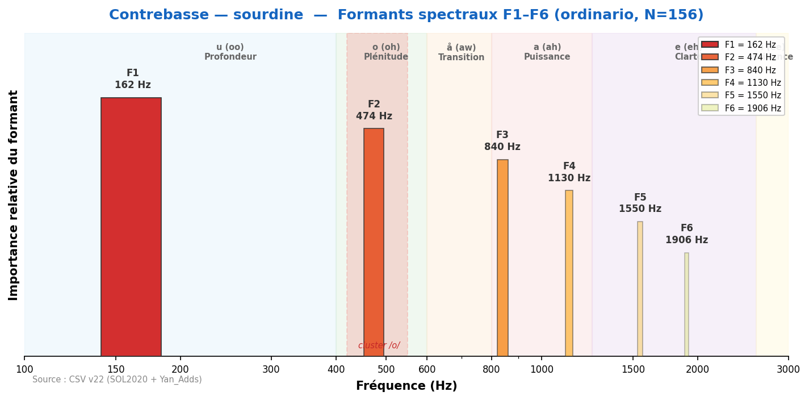
Sourdine : F1 descend à 162 Hz. Son plus mat, perte de résonance. Utilisé pour les passages chambristes.
Comparaison soliste vs. ensemble : l'effet de section comprime légèrement les formants et homogénéise le spectre. Les irrégularités individuelles s'annulent, produisant un timbre plus lisse et plus fondu.
| Instrument | F1 solo | F1 ens. | Δ | F2 solo | F2 ens. | Δ |
|---|---|---|---|---|---|---|
| Violon | 506 | 495 | 11 | 1518 | 1163 | 355 |
| Alto | 377 | 366 | 11 | 829 | 764 | 65 |
| Violoncelle | 205 | 205 | 0 | 506 | 474 | 32 |
| Contrebasse | 172 | 172 | 0 | 474 | 441 | 33 |
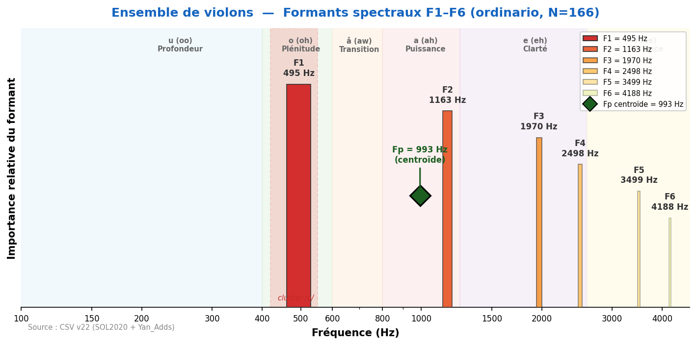
L'ensemble de violons comprime légèrement les formants par rapport au soliste (F1: 495 vs 506 Hz). Le spectre est plus homogène, les irrégularités individuelles s'annulent. Fp=993 Hz.
Fp centroïde = 993 Hz
| Technique | N | F1 | F2 | F3 | F4 | F5 | F6 |
|---|---|---|---|---|---|---|---|
| flautando | 21 | 484 | 883 | 1 314 | 1 895 | 2 950 | 3 973 |
| ordinario | 166 | 495 | 1 163 | 1 970 | 2 498 | 3 499 | 4 188 |
| pizzicato-l-vib | 126 | 345 | 603 | 1 087 | 1 658 | 2 293 | 3 165 |
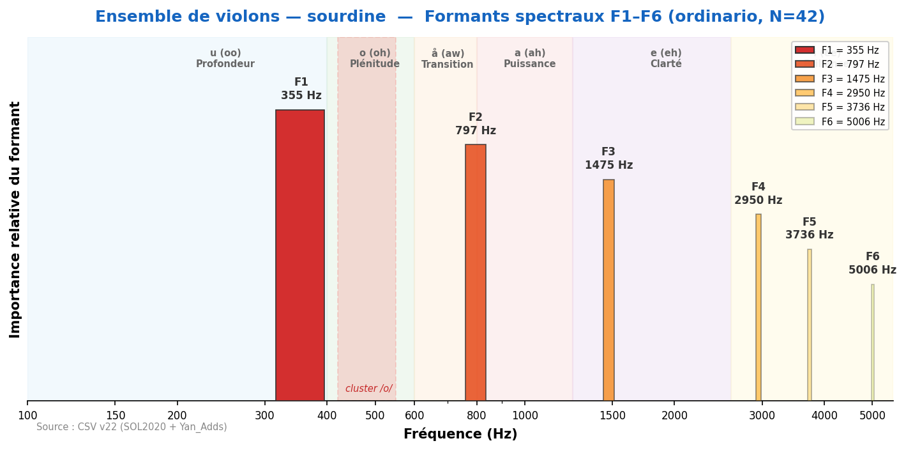
Ensemble avec sourdines : F1=355 Hz. L'effet de la sourdine est similaire au soliste mais encore plus homogène grâce à la fusion d'ensemble.
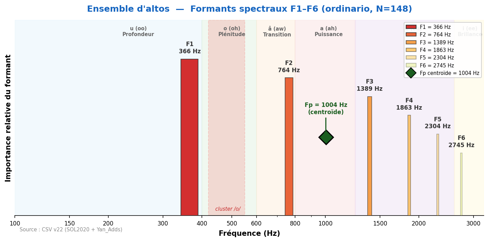
Ensemble d'altos : F1=366 Hz, proche du soliste (377 Hz). La section d'altos produit un son riche et velouté. Fp=1004 Hz.
Fp centroïde = 1004 Hz
| Technique | N | F1 | F2 | F3 | F4 | F5 | F6 |
|---|---|---|---|---|---|---|---|
| flautando | 19 | 377 | 732 | 1 109 | 1 680 | 2 089 | 2 379 |
| ordinario | 148 | 366 | 764 | 1 389 | 1 863 | 2 304 | 2 745 |
| pizzicato-l-vib | 74 | 280 | 657 | 1 055 | 1 550 | 1 960 | 2 649 |
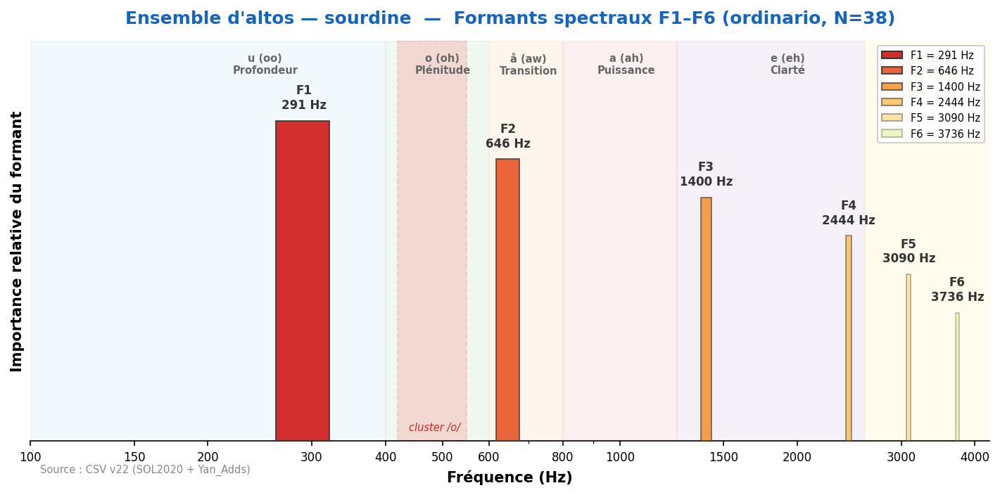
Ensemble d'altos avec sourdines : F1=291 Hz. Son très voilé et intime.
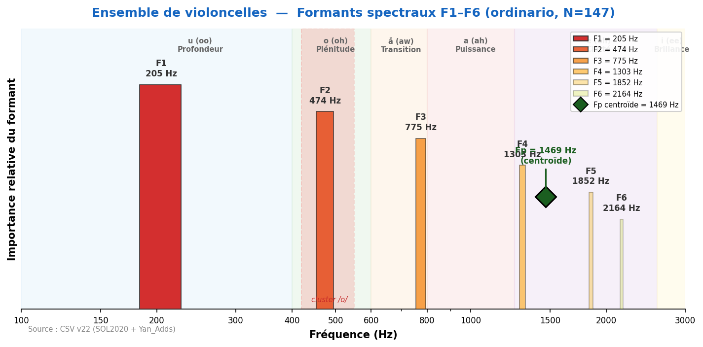
Ensemble de violoncelles : F1=205 Hz, identique au soliste. La section produit un son profond et enveloppant. Fp=1469 Hz.
Fp centroïde = 1469 Hz
| Technique | N | F1 | F2 | F3 | F4 | F5 | F6 |
|---|---|---|---|---|---|---|---|
| flautando | 19 | 205 | 463 | 754 | 1 012 | 1 647 | 1 895 |
| ordinario | 147 | 205 | 474 | 775 | 1 303 | 1 852 | 2 164 |
| pizzicato-l-vib | 93 | 194 | 484 | 818 | 1 260 | 1 809 | 2 347 |
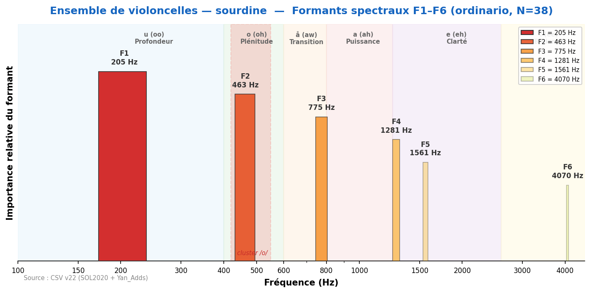
Ensemble de violoncelles avec sourdines : F1 reste à 205 Hz, F2 descend à 463 Hz. Son contenu et mat.
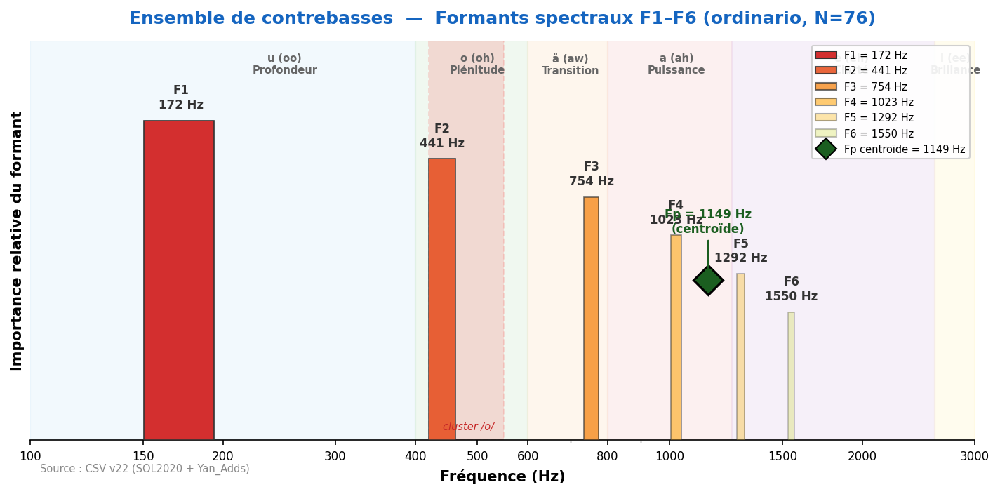
Ensemble de contrebasses (non-vibrato) : F1=172 Hz. La section produit une fondation grave massive et stable. Fp=1149 Hz.
Fp centroïde = 1149 Hz
| Technique | N | F1 | F2 | F3 | F4 | F5 | F6 |
|---|---|---|---|---|---|---|---|
| flautando | 18 | 172 | 452 | 947 | 1 023 | 1 324 | 1 561 |
| non-vibrato | 76 | 172 | 441 | 754 | 1 023 | 1 292 | 1 550 |
| pizzicato-l-vib | 98 | 172 | 441 | 764 | 1 034 | — | — |
Source des données : formants_all_techniques.csv (SOL2020) + formants_yan_adds.csv (ensembles) — pipeline v22 validé.
Ensembles : Yan_Adds (Violin-Ensemble, Viola-Ensemble, Violoncello-Ensemble, Contrabass-Ensemble).
Sourdines lourdes (piombo) : SOL2020 — effet plus prononcé que la sourdine standard.